What is watch time?
Watch time is the total accumulated amount of time viewers have spent watching your videos on YouTube. It is an important metric of YouTube’s search and discovery algorithm. According to YouTube’s creator academy, the goals of YouTube’s search and discovery system are dual: Help audience find the videos they want to watch and maximize long-term viewer engagement and satisfaction.
In October 2012, Google’s platform rolled out a brand-new algorithm designed at gratifying video content that actually engaged viewers and kept them on the platform for as long as possible. The new algorithm now recommends videos that lead to greater Watch Time, with video views terminated being the principal signal to rank content.
YouTube inveterate the update by stating that:
“We’ve started adjusting the ranking of videos in YouTube search to reward engaging videos that keep viewers watching. The experimental results of this change have proven positive – less clicking, more watching. As with previous optimizations to our discovery features, this should benefit your channel if your videos drive more viewing time across YouTube.”
Watch Time, according to YouTube, is “The amount of time in aggregate that your viewers are watching your videos.” And, according to the Creator Playbook, “YouTube optimizes search and discovery for videos that increase watch time on the site”. It’s a key metric because YouTube uplifts videos and channels with higher watch times in their search results and recommendations section. It does this because the more watch minutes/Hours a video has, the more engaging their algorithm believes it is.
As per Statista, YouTube viewers world-wide are now watching more than 1 billion hours of videos a day, threatening to obscure U.S. television viewership, a milestone triggered by the Google unit’s aggressive embrace of artificial intelligence to recommend videos. Feeding those recommendations is an unmatched collection of content: 500 hours of video are uploaded to YouTube each minute, or 65 years of video a day, as per data by Wall street journal.
According to YouTube's algorithm, a 60-second video that is watched from the beginning to the end will rank higher than a 20- or 30-minute video that is watched only for a couple of minutes. “The corpus of content continues to get richer and richer by the minute, and machine-learning algorithms do a better and better job of surfacing the content that an individual user likes,” YouTube Chief Product Officer Neal Mohan said.
YouTube CEO Susan Wojcicki has touted the stat in the press, too, saying how overall Watch Time on the site (Think with Google) has dramatically increased year over year.
Contents
- 1. How to check total watch time on your channel?
- 1. How to Measure Watch Time Metrics in YouTube Analytics
- 3. Strategy #1 Increase your videos’ session watch time
- 4. Strategy #2 Choose Titles and Thumbnails That accurately Reflect Your Content and aren’t misleading
- 5. Strategy#3 Organize your videos in themed Playlists to Drive an uninterrupted Viewing Experience
- 6. Strategy#4 Leverage long-tail keywords to increase your videos’ viewership more
- 7. Strategy#5 Hook your audience in the first 15 seconds of your video
- 8. Strategy #6 Create a video series
- 9. Strategy #7 Engage with your audience via community tab
- 10. Strategy #8 Detect where your audience retention drops
- 11. Strategy #9 Create longer videos
- 12. Strategy #10 Post at the peak hours
- 13. Strategy #11 Try to produce evergreen videos to accelerate watch hours
- 14. Strategy #12 Host live streams to boost your watch-hours
- 15. Strategy #13 Consistency in production is the key to increase your watch time
- 16. Strategy #14 Create engaging, entertaining, trending, content that viewers will love to watch
- 17. Strategy #15 Build-up your subscriber base to increase your watch-time
- 18. Strategy #16 Strategically sprinkle pattern interrupts to increase session watch-time
Does watch time matter on YouTube?
Yes, it does. Here’s how: As watch time is the total amount of time in aggregate that your audience spend watching your videos, the higher it is, the more likely YouTube will promote your channel through search and recommended videos.
What is the relation between watch-time and ranking of a channel?
According to an industry study by Justin Briggs (www.briggsby.com) there is a strong correlation between Watch Time and rankings in YouTube search and watch time is the most important aspects of ranking. When you get more watch time for your video, it directs a strong signal to the algorithm that it’s of high-quality. The algorithm then, ranks it for relevant keywords and promote it through related and recommended videos.
What is the relation between watch-time and subscriber base of a channel?
The more time viewers spend watching your videos, the more your subscribers will grow! Most YouTubers love to buy YouTube subscribers to increase watch time on their channel as well as gain better rankings in the SERPs, whereas some improve YouTube videos organic reach to increase the same.
How to check total watch time on your channel?
- Login to your account.
- Click your profile icon in the top right corner, then select YouTube Studio.
- From the Channel Dashboard, select Analytics from the left-hand menu.
- You can study your watch time in Overview section.
- Check out your watch minutes by changing time period from last 28 days to “lifetime”.
- You can see the total time in minutes (which will be discussed later in this blog)
- Now, you may be wondering, how are YouTube watch hours calculated?
Total watch time in hours = Total watch time in minutes divided by 60
Another formula for measuring = Views x Average View Duration
How to Measure Watch Time Metrics in YouTube Analytics
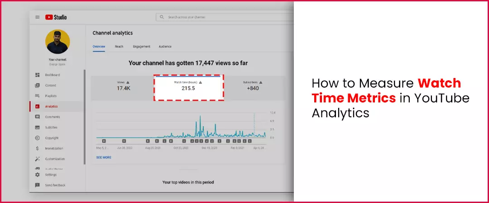
The Analytics Views Report, Audience Retention Report, and engagement reports will help you measure the performance of your video(s), and overall channel.
Views Report
The Views report represents the exhaustive statistics about accumulated minutes watched. The report also showcases ‘Estimated Minutes Watched’ by video, location, and by date, and shows you which viewers are protruding with, and which they are drooping off.
Audience Retention Report
Audience retention is a measurement of how many viewers are still watching your video during your video playback. It also represents you the point where they stopped watching. You must optimize the first 15 seconds of each video. A high drop-off rate here would specify that your target audience is not happy with your content and are leaving to watch other creator’s videos.
Relative Audience retention
use this report to see how your video compares to similar videos.
Absolute Audience retention
Views per moment as a percentage of video views
Audience engagement report
This report represents how engaged your target audience is, by showing how much of the video they watch.
How does YouTube algorithm rank videos according to watch-time accumulated?
The algorithm calculates the watch hours while bearing in mind the video length to ensure fair results. It ranks videos by allotting them a score based on other performance analytics data and performance metric-watch-time. The inkling is not to identify “good” videos, but to match target audience with videos that they want to watch. The target goal is that they spend as much time as possible on its platform (and consequently see as many ads as conceivable)
How to Increase watch time on YouTube videos
The performance parameter of algorithm- “watch time” plays a crucial role in determining and increasing a channel’s ranking, views, and subscriber count.
You can leverage following strategies as YouTube 4000 hours watch time hacks
Strategy #1 Increase your videos’ session watch time
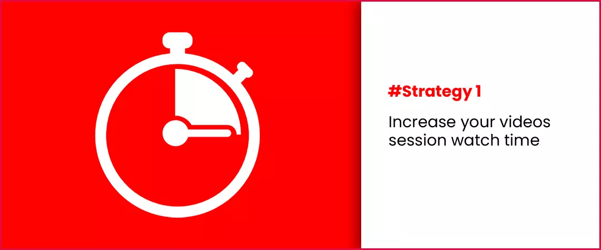
Session Watch Time is the total amount of time a viewer spends watching your videos during a single session visit. Noticeably, the algorithm promotes videos in rankings that keep viewers on YouTube, because it makes more money from ads.
You can use the following stratagems to increase your Session watch hours:
Best practices
Use Playlists
Playlists fundamentally increase your Session Time automatically. That’s because playlists automatically play all the videos in that playlist and multiply watch-time. (we will discuss about them more later)
Use YouTube Cards
The best method for keeping viewers engaged is to use cards to link to other content on your channel that viewers may be interested in. Cards help them to direct viewers towards other videos in the series. You can add up to 5 YouTube interactive cards to your videos that drive the target audience to your other videos. You must add cards right where viewers lean towards to drop off. This is a powerful, YouTube 4000 hours watch time hack, using which you turn a lost viewer into one that increases your Session watch hour and of course over all watch-time!
Add Video Elements to your end screens
YouTube permits you link to related videos at the end of each video. So, another, 4000 hours watch hours hack is leveraging end screens to hook your viewer to your next creation. The smartest strategy is to encompass the viewer’s time spent in that certain session via promoting other video content that they can then click on to watch. Through end screen promotion viewers can easily find another related video from your channel. You can also add a link to subscribe in the end of each video.
To increase YouTube watch time, link to a themed playlist. When the user clicks on the playlist URL, they’ll immediately be redirected to the playlist player. Add up to 4 videos and video playlist to the last 20 seconds of your videos that can be watched with a single click.
Strategy #2 Choose Titles and Thumbnails That accurately Reflect Your Content and aren’t misleading
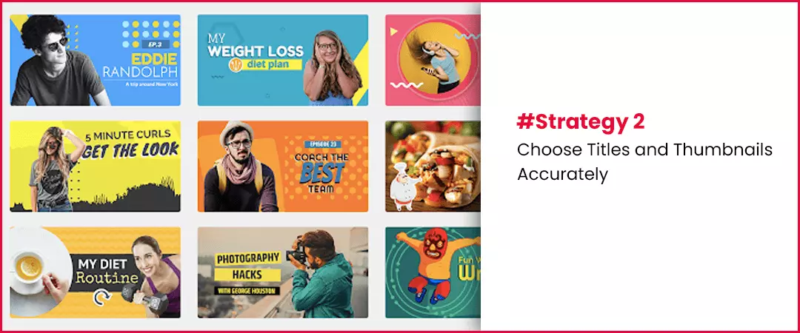
The titles and thumbnails have direct influence on the views and rankings of your videos. They work as a game changer, inspire viewers to click, give introductory perception of your videos and help you to Increase YouTube watch time. Selecting the right amalgamation of thumbnails and titles can help you progress. Choose relevant titles and compelling thumbnails and make sure they work together to captivate viewers’ attention. Choose an image that accurately reflects your content. So, that the viewers know what to expect when they click.
You can check out the audience retention reports of your videos to measure the effectiveness of your thumbnail. If you see a fast drop out in first 15 seconds, then your content is not delivering on the expectations provided by thumbnail and title. The prominence on minutes watched makes sagacity if you think about YouTube’s perspective. A video with a deceptive (or clickbait) title may get only 2 or 4 seconds of watch time because the viewer swiftly realizes the video isn’t what they thought it would be. However, when somebody commits to a video for even 50 seconds, it undeniably has more value because it keeps viewers on the platform longer.
Best practices:
- Choose relevant, short, intriguing, and appropriate title for your videos.
- Formulate an image for thumbnail that compel viewers to click and watch more.
- Let thumbnail and title to tell a fascinating story.
- Pick a thumbnail image that accurately reflects the content of your video, so viewers know what to expect from it.
- Your thumbnails must work effectively on both mobile and desktop.
- Avoid clickbait titles.
Strategy#3 Organize your videos in themed Playlists to Drive an uninterrupted Viewing Experience
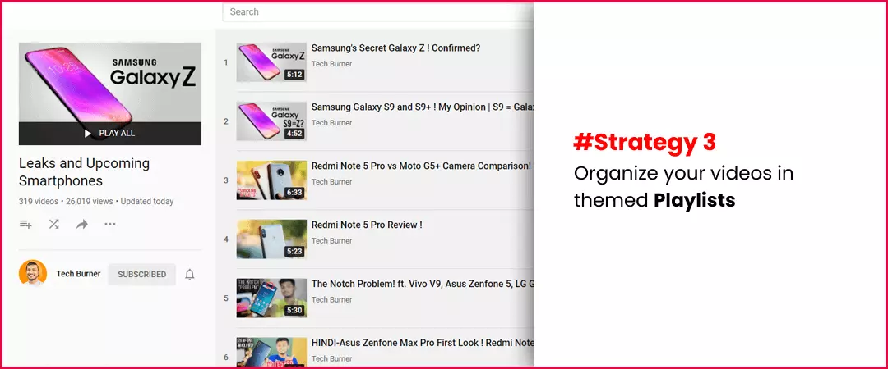
Creating playlists can help to guide potential target audience towards a more linear viewing experience so that they watch more of your content. Bind and organize together your videos via themes by creating playlists. This mechanism guides potential target audience toward a longer viewing experience where they watch more of your creations. Which, eventually boosts watch minutes, giving you a higher ranking. By generating playlists, you can organize your videos in interesting sequences, which work as a YouTube 4000 hours watch time hack. Using this mechanism, you can direct potential target audience towards a longer viewing experience where they watch more of your content. Hence, by organizing your videos into an eloquent sequence (relevant topics, events, series, shows, etc.), you make it comprehensive for viewers to watch the next video in the single session. This not only increases your watch time, but it benefits you with a supplementary prospect to surface in recommended suggested video results on the home page.
Best practices
- If you use the playlist feature, consider getting rid of your video intros and outros to avoid boring your audience which may cause them to drop off.
- You must optimize your playlists, use the start and end time function on YouTube to enumerate IN and OUT points for each video, which produces a more inspiring user involvement.
Strategy#4 Leverage long-tail keywords to increase your videos’ viewership more
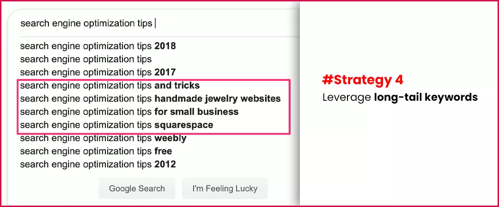
Targeting long-tail keywords help you drive target audience to watch your videos and not of your competitors. You can find relevant, powerful and dominating keywords using Google search suggest feature, YouTube’s suggestions feature, Google Ads keyword planner, TubeBuddy, Canva or other paid SEO tools.
Strategy#5 Hook your audience in the first 15 seconds of your video
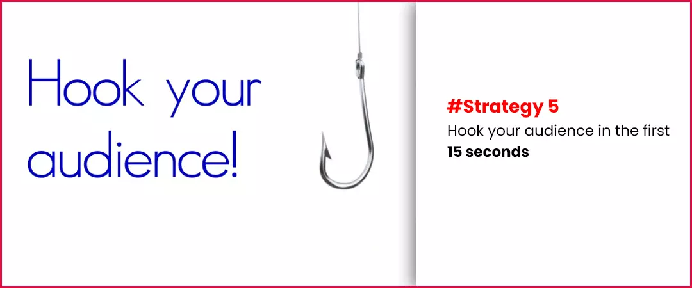
If the first 15 seconds of your videos are boring than you will face high bounce rates, which are bad for your channel’s reputation and will harshly drive down your watch time. According to statistics for video marketing best practices, 33% of viewers will stop watching a video after 30 seconds. This retardation goes further after a minute. There is a 45% loss in viewership by the first minute and a 60% loss by the second minute. So, hook your audience in the first 15 seconds of your video by making it intriguing, engaging, exciting, storytelling, and notify your target audience of getting the best content ahead in the video.
Strategy #6 Create a video series
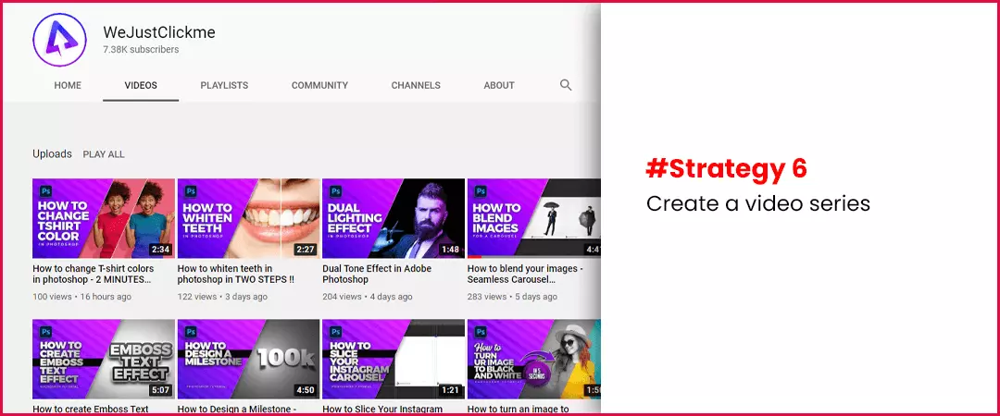
Developing series of your video content help viewers consuming episodic, serialized content. Even if you’re producing educational videos, you can release a series of videos with chapters on the subject you want.
Strategy #7 Engage with your audience via community tab
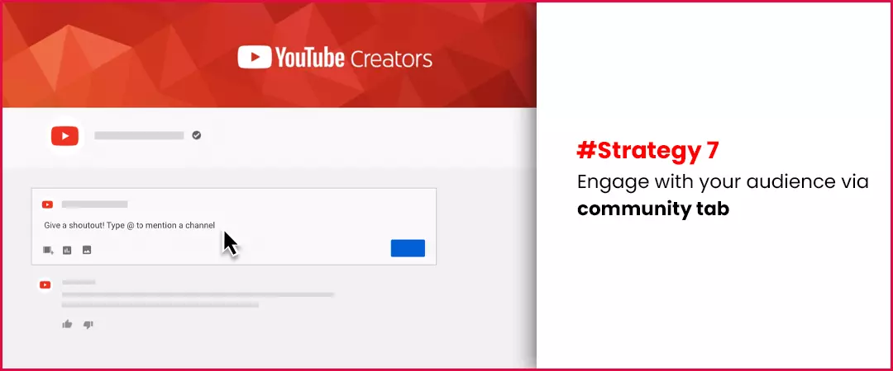
Strengthen the relationship with your target audience by using tool community tab. Conduct polls, contests, giveaways, broadcast behind the scenes videos and build anticipation around your content.
Strategy #8 Detect where your audience retention drops
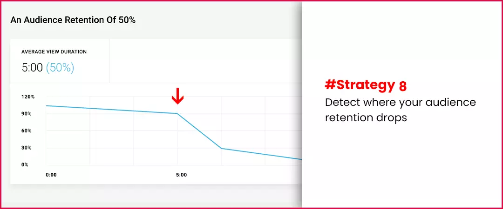
Track audience retention of your videos. You can study it under video analytics below the overview section. Analyse the statistics and remove the boring parts, shortcomings and negative aspects to Increase your watch time on YouTube videos.
Strategy #9 Create longer videos
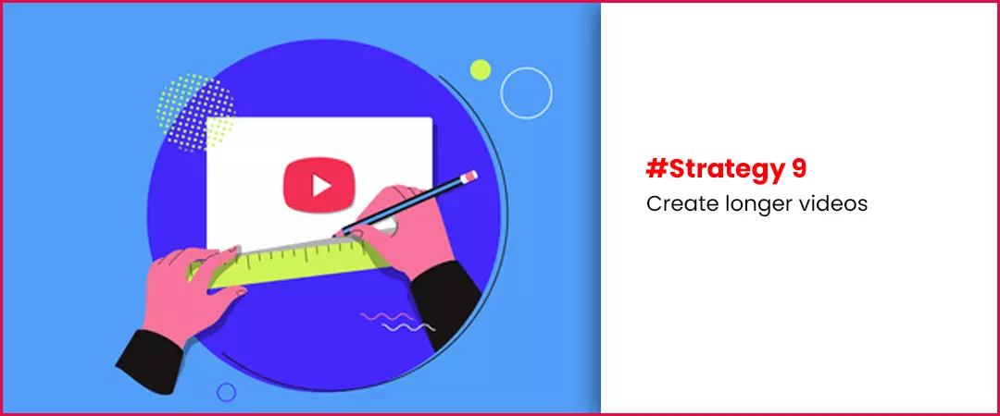
A recent YouTube ranking factors study found that longer videos (>15 minutes) outperformed shorter videos in YouTube search. Longer videos generate more watch time and therefore, are more likely to rank by the algorithm. You can use the following practices for good results.
Best practices:
- Create 2, 3 or 4 videos per week. Each 10 to 15 minutes long.
- Create also a weekly or monthly livestream of 60 minutes (we will discuss about them later).
- Generate quality content with cross promotion on social media.
Strategy #10 Post at the peak hours
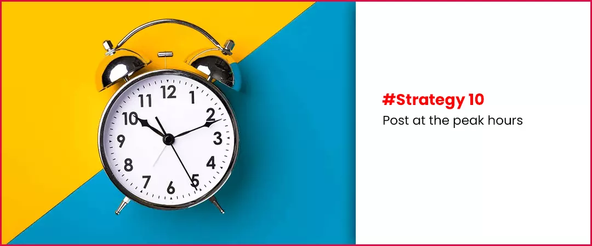
One of the best ways to Increase watch-time on YouTube videos is to give your video the chance of displaying up in search results. As more views lead to more watch minutes! You can track when your audience is usually online using analytics. You must post around mid-afternoon during the week, which gives your video time to be indexed before peak viewing hours (9pm). Post earlier on the weekends, and consider days when Internet traffic generally is higher, like on holidays.
Strategy # 11 Try to produce evergreen videos to accelerate watch hours
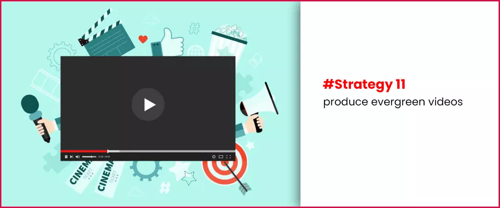
Increasing watch-time and ranking of your channel through evergreen content could potentially be your superpower. Evergreen content is often answer based in its nature, reacting interrogations to commonly asked questions. It is a leading counterintuitive video strategy. These videos labour for the channel, days, weeks, months, even years after you first published them. They provide valuable information on topics people are searching for, especially if those topics are fresh, for example, the latest software update, new beauty products, the latest technology gadgets, etc, you can establish yourself in the search for those topics. Moreover, contingent on the trend of that topic, your videos can last longer in terms of receiving more Watch Time!
Strategy #12 Host live streams to boost your watch-hours
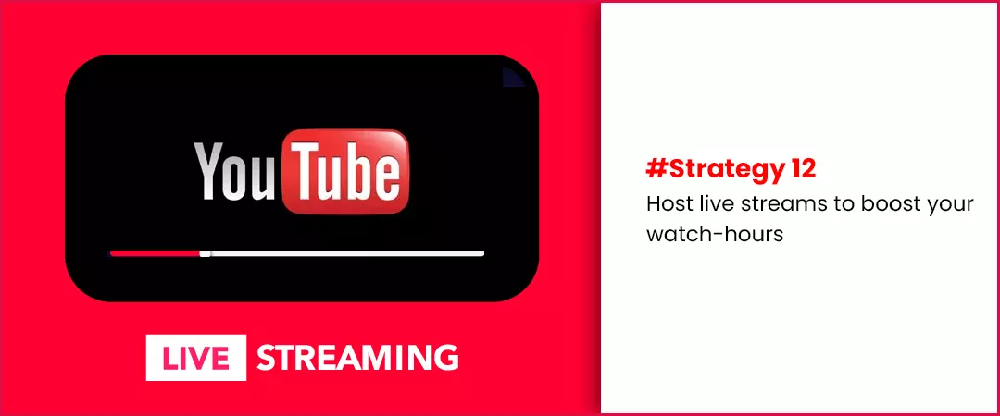
In today’s video-dominant world, live streaming software has proven to be principally treasure for Youtubers who simply want more Watch-time. No matter what the anticipated end result may be, the target goal for youtubers who live stream is to get in front of their target audience and accumulate the much-needed watch hours.
Marketing professionals authorize that this is true. According to Troy Evans at Moz, “We’ve known for some time now that a live broadcast will often produce a significant increase in viewership.”
After you built up an audience of a few hundred subscribers, even if you get maybe 10 or 15 viewers joining you for a live stream for one hour, that's a genuine bit of Watch Time. This type of community engagements is ideal for live events, breaking news, sports, politics, inaugural videos, unboxing video, product demonstrations, speeches, and so on. Many industries are hosting digital conferences, webinars, and similar events with live streaming.
Marketing consultant Kim Garst of Kimgrast.com, is one example of how marketers can implement live streaming into different aspects of their advertising strategies & corporate manoeuvres and increase watch-time on their channel enormously. Product releases, Q&As, and other simulated events that are designed to get the community involved are valuable, to increase your watch time exponentially!
Strategy #13 Consistency in production is the key to increase your watch time
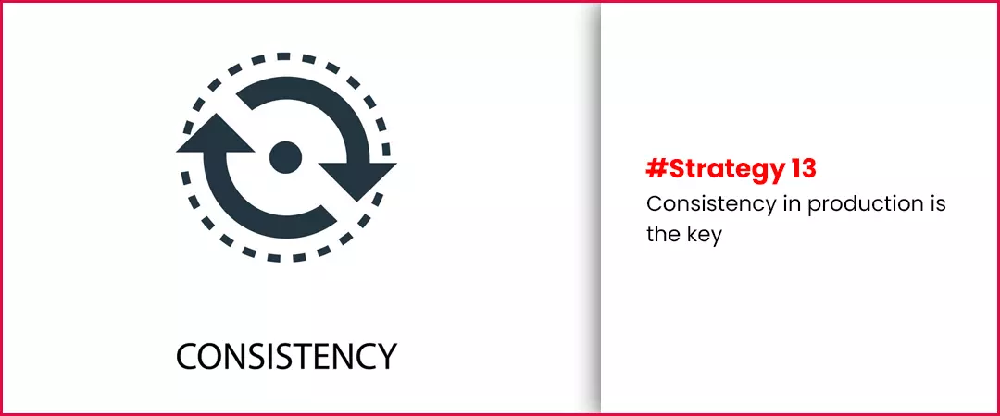
Aim to generate content for your users on a consistent basis. The more videos you publish, the more material data it has to show with, in terms of helping up your content to the right target audience. Make a schedule/pattern of production & uploading and stick to it to make your audience habitual of consuming your content.s
Strategy #14 Create engaging, entertaining, trending, content that viewers will love to watch
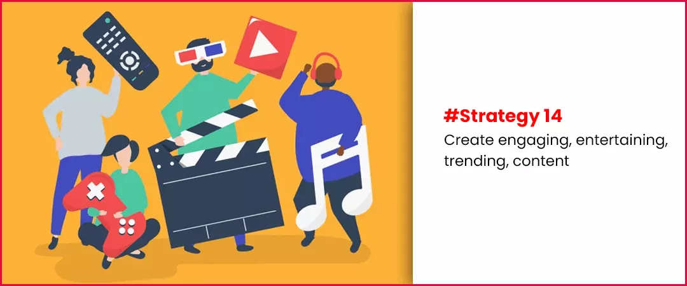
The formula is true and if you consistently manufacture and publish quality videos, you will drive and shape a loyal following in the form of subscribers.
Strategy #15 Build-up your subscriber base to increase your watch-time
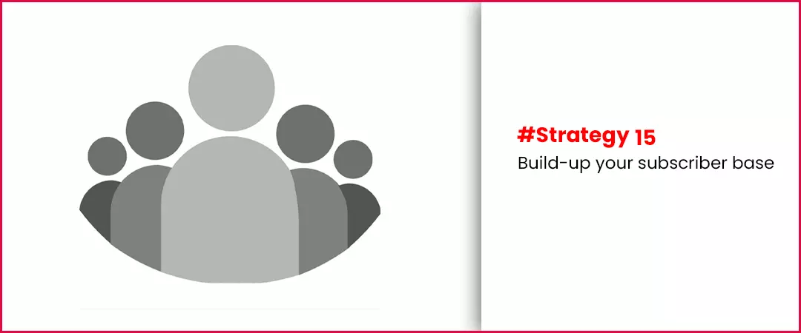
An active, engaged, and fervent subscriber base will lead to a higher rate of accumulated Watch Time from the point you publish them. Subscribers have already bought into you, your brand, and your channel, and you’ll get a more dedicated response from these fans and have a better audience retention rate than from viewers who have found you via the search results. It’s an eminent fact that subscribers watch, engage with, and share more video than non-subscribers, and therefore a stratagem to build subscriber base is one technique to stimulus watch time.
Strategy# 16 Strategically sprinkle pattern interrupts to increase session watch-time
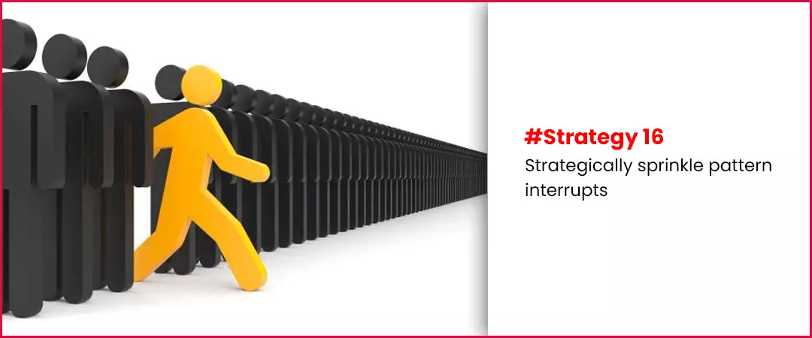
You can increase the chances of your viewer sticking around for the entire video by including something unexpected to change the consumer behaviour positively and spice up your content to stay them longer. You can change the emotional or behavioural state by using the following practises.
Best practices:
- Different camera angles
- Shoot in 4k.
- Using B-roll footage
- Using snapshots of a popular culture, animations
- Sprinkle them every 30 seconds of your video.
These 16 strategies will blossom your channel to accumulate 4000 watch-hours to monetize your channel with YPP or Google AdSense. I hope you found this piece of luxurious content useful to know how to increase watch time for videos.
Feel free to share!